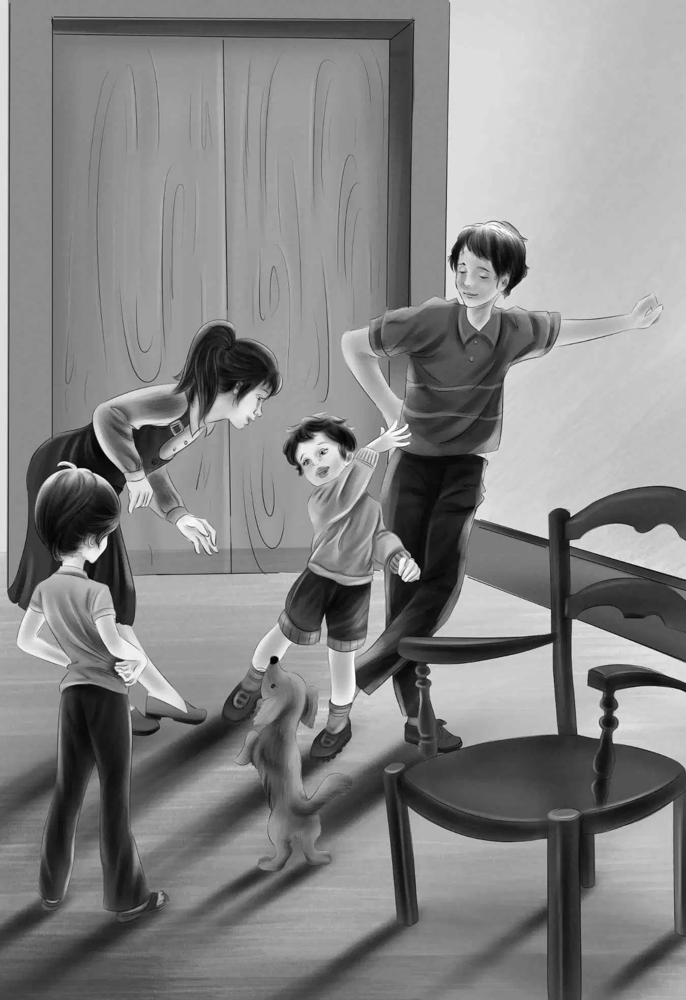

Joe Again
一天早上，班尼说：“我真希望迈克每天都能过来。”
“噢，我可不想！”其他孩子立刻抗议道。
亨利抬眼看了看：“我们并不一定需要有客人跟我们一起玩呀。”
“你不会把大乔也当客人吧？”维莉问。
“噢，当然不会，”亨利说，“他是我们家的一员。怎么了？难道你想邀请他来跟咱们一起吃饭吗？”
“不是，”维莉慢慢地说，“不过，今天他说我上完课之后，得准备给你们演奏一次了。”
“那就把他留下来一起吃饭吧。”杰西说着看了看亨利。
“班尼，你过来，”亨利说，“你知道今天是你的生日吗？”
“不知道。”班尼走到哥哥身边。
“真是的！”亨利接着说，“你想要什么礼物？我们给你买。”
“奶油。”班尼兴奋地说。
“你的意思是奶油冰激凌？”亨利问。
“不，不是。我说的是装在瓶子里的奶油——就像牛奶一样。是一大瓶……不是一小瓶。”
“这倒是一份奇怪的礼物。”维莉说。
“你是想喝吗？”杰西问。
“不是，我想放到黑莓上面，就像‘彼得兔’那样。”
“那咱们就买一大瓶奶油吧，杰西。”亨利笑了起来。
班尼开始绕着马厩蹦蹦跳跳地欢呼起来。
“班尼，”杰西说，“维莉在上课前会给你烤一个生日蛋糕。”
“真的吗？”班尼又欢呼了一声，“我想看着她给我做蛋糕。”
维莉将做蛋糕所需的东西全都拿了出来，一一摆放在面板上。
“我们会在蛋糕的四周插上一圈蜡烛。”维莉说。
“我想在中间也插一支。”班尼说。
“可以，不过我们想把中间留出来……”维莉突然打住了。
“没关系，”杰西说，“班尼不知道我们想把中间留出来做什么。”
蛋糕看起来棒极了。当维莉将它从烤箱里拿出来时，班尼说：“闻起来就跟真的生日蛋糕一样。”
在给蛋糕撒上糖霜之前，维莉将它放在两个盘子上面，等着它冷却。
“咱们坐下吧，”杰西说，“午饭咱们先随便吃点儿面包和牛奶。吃完后，亨利去取奶油和蜡烛，维莉可以去上课，而我就趁这个时候把碗给洗了。”
“我要帮你擦盘子。”班尼说。
“你真是一个乖宝宝！”杰西看着这个懂事的弟弟说道，“连生日这天都一样乖。我肯定你会有一个快乐的生日的。”
他们刚刚完成各自手头的活儿，大乔和维莉便带着小提琴进来了。
“维莉已经准备好为你们演奏啦，”大乔说，“大家都请坐下好吗？”
杰西异常兴奋地坐到了亨利和班尼中间的箱子上。维莉看起来倒是一副沉着冷静的样子。这还是她头一次演奏给除大乔以外的人听呢！她举起琴，等着老师告诉她该站在哪儿。
大乔让维莉面朝门口站着，而他则靠墙站着，便于观察维莉。然后，他们便开始表演了。维莉演奏的那部分非常简单，大乔那一段就难多了。但孩子们的耳朵似乎只听到了维莉演奏的那部分。维莉的反应倒不像姐姐那么热烈。

“真棒！”演奏一结束，杰西立刻欢叫起来。
“她拉得真的很好，对吧？”大乔转过身来问道。
“真精彩！”亨利说，“她能成为一名真正的小提琴演奏家的，对吧，大乔？”
“她能的，一定会的。”大乔回答道。
“我真希望维莉能再演奏一遍，这样我就能听习惯了。”班尼说。
“那就再演奏一遍吧，”杰西急切地请求，“听一整天我都很乐意呢。”
维莉和大乔又将曲子演奏了一遍。演奏刚刚进行到一半时，布朗宁先生突然出现在马厩的门口。维莉抬眼看了看，脸上露出了微笑，但她并没有停下来。
一曲结束，布朗宁先生叫了起来：“约翰！”
大乔转过身来，“噢，是布朗宁先生！”他伸出手，“见到你真高兴。一切又都回到正轨了。”
“呵呵，见到你我也很高兴，我的孩子！”布朗宁先生说，“我一直在找你，找了好长时间。”
“这些都是我的朋友，”大乔介绍道，“这位是杰西。”
“我们和布朗宁先生已经见过面了，”杰西微笑着说，“我们已经很熟了。大家都请坐吧。”
“我可是永远也忘不了那个能用绿色瓶子做出苹果派的小姑娘啊，”布朗宁先生坐到了客人专用椅上，“还有这个把小提琴演奏得这么好的姑娘。孩子们，你们口中的这个大乔，可是我最好的朋友呢！”
“也是我最好的朋友。”班尼说。
“对，上次你就告诉过我。”布朗宁先生笑眯眯地看着班尼，“不过在成为你最好的朋友之前，他就已经是我最好的朋友了。”
班尼想了想，同意了：“他可以有两个最好的朋友。”
“说得好！你可以让我问问他这段时间去了哪儿，出了什么事吗？”
“大乔没什么事儿。”班尼说。
“没错，”大乔说，“只是有好长一段时间，我身体不大好，甚至想不起来自己是谁，这事儿晚点再告诉你。现在，我已经好多了，准备回博物馆去了。如果我叔叔还愿意收留我的话，我打算回到他身边。”
“他肯定会的！”布朗宁先生说，“你叔叔都快担心死你了。”
“那我越快回去越好。”大乔说。
“他在一家博物馆里工作。”亨利暗想。
“他可真是一个聪明的人。”杰西心想。
“你们不会真的觉得大乔是来丹尼尔船长这儿帮工的吧？”布朗宁先生问。
“不，不是，”亨利说，“我原来就觉得他应该是在博物馆里工作的，只是暂时离开了。”
“当初他给我们拿来那些书的时候，我就开始怀疑了，”维莉说，“他能很快找到贝壳和花草的名字。”
“大乔，”杰西说，“那些书就是你写的吧？我记得当时我们还说过，作者的姓跟我们的一样。”
大乔微笑着，什么也没说。
“我想你们还不知道他是谁吧？”布朗宁先生说。
“我知道，”班尼说，“他懂的东西比所有的书都多，而且他在博物馆工作。”
“没错，”布朗宁先生说，“他是一家博物馆的馆长。那你们知道他的名字叫做乔瑟夫·奥登吗？”
“知道，”班尼说，“这事儿我也知道。”
“他的全名是约翰·乔瑟夫·奥登。”布朗宁先生说，“你们还没明白过来吧？他就是你们的叔叔。”
“什么？”几个孩子异口同声地惊呼起来。
“没错，”布朗宁先生说，“大乔的父亲和你们的爷爷是亲兄弟。”
“大乔，那你也和爷爷一起生活过吧？”亨利问。
大乔看着孩子们：“我在离开之前是在那儿住过，而且现在我还想回去。不过，不知道詹姆斯叔叔收不收留我，我的侄子、侄女们介不介意呢？”
“怎么会介意？”亨利说，“这可真是太棒啦！”
“噢，大乔，”班尼说，“你可以继续成为一个百事通。我乐意跟你住在一起，比跟望望在一起还乐意！”
这一句话，正好道出了大家的心声。